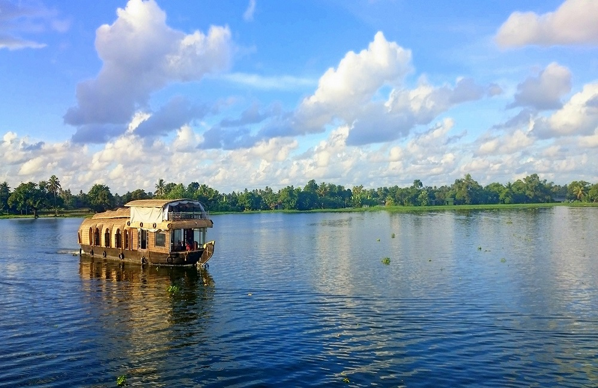
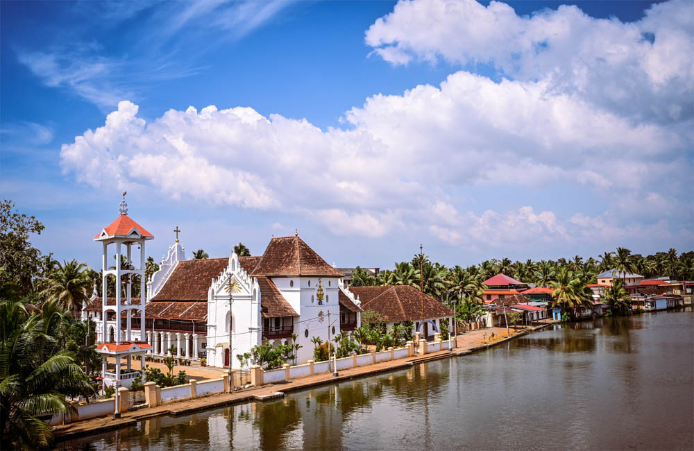
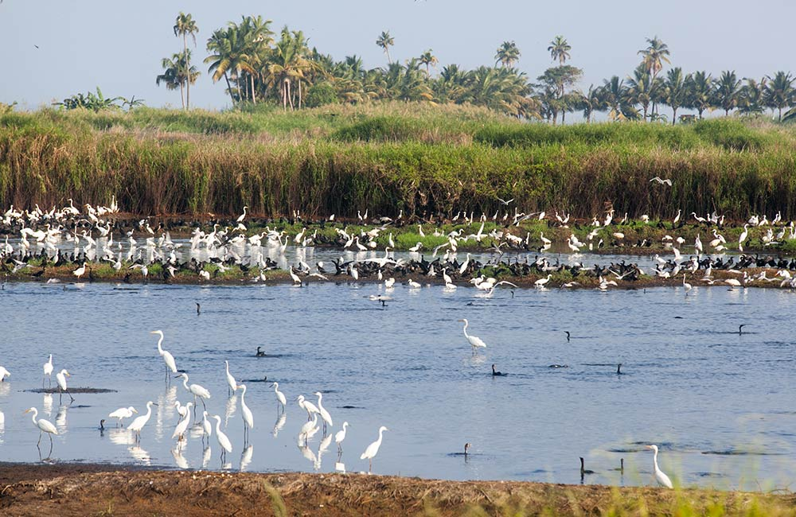

POINTS OF INTEREST

VEMBANAD LAKE
The longest lake in India. The major highlights of this lake is Kettuvallams, numerous resorts along the banks and the famous Nehru Trophy Boat Race.

CHAMPAKULAM
Widely acclaimed for the Moolam boat race or snake boat race held here, Champakulam is a charming village that delights the senses with lush coconut groves and paddy fields.

PATHIRAMANAL
Pathiramanal means ‘Sands of the Night’. A small lake island on the backwaters of Lake Vembanad, it is an ideal spot to observe birds.

KRISHNAPURAM PALACE
Boasting the quintessential architectural style of Kerala, Krishnapuram Palace is a gorgeous 18th-century affair.

AMBALAPPUZHA TEMPLE
Dedicated to Lord Krishna, the temple is one of the oldest shrines in the region.